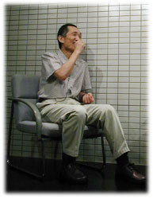
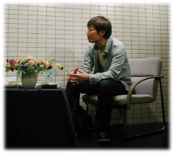
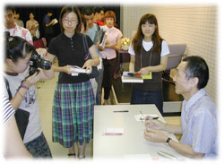

|
写真も文章も「ひやかし」だから、楽しい
ホンマ 『全面自供！』、買って読みました。インタビューの合間合間に入っている短い作品がすごいおもしろかったです。寝小便の話もおもしろかったし、お父さんと夕食を食べる話が好きでした。最近、庄野潤三さんの作品を読むことがあるんですけど、そういうのに近い。あれを高校の作文の時間に書いていたというのはすごいですね。
赤瀬川 ちょっとはずかしいんですけどね、文章としては。
ホンマ 芥川賞作家に失礼ですけど、このときの文章と後の時代の文章があまり変わっていない。
赤瀬川 基本的にはそうですね。その前に、途中、ちょっと変わったんです。
ホンマ むずかしい言葉を使ったころですか？
赤瀬川 そうそう、６０年、７０年代のいわゆる全共闘の時代です。むずかしい言葉が強そうで、一冊目の本はそれでかためたようなものでした。裁判もあったものですから（註・1965年の千円札裁判）、国家とか権力とかいう言葉を一生懸命使ってね。でもやっぱり自分には合わない。はずかしくなって、むずかしい言葉を無理に使うのはやめました。
ホンマ 末井昭さんとの会話みたいな文章もすごいおもしろい。
赤瀬川 写真の場合はわからないけど、文章は、メディアによってこちらの構え方もちがってきます。当時、『ニューセルフ』という裸の載っている雑誌に書くことになったんですけど、挑戦されたみたいで、ちょっと怖かった。というのは、女体がいっぱい載っていて、当然、目はそっちにいくわけです。でも、やはり書く以上は読んでほしい。むずかしいことを書いても読んでもらえる文章、読ませる文章というのは、この裸の雑誌で鍛えられました。
ホンマ 赤瀬川さんの活動のひとつ、高梨豊さん、秋山祐徳太子さんとのライカ同盟は楽しそうですね。あんなに楽しそうに写真を撮ってる人もいないと思います。赤瀬川さんが一番楽しそうですよね。
赤瀬川 いやあ、楽しいですね。まったく責任がありませんからね。ぼくは写真家ではないから、写真はひやかし。ひやかしというと言葉は悪いんですけどね。自分では、絵描きだと思っているんです。だから、いまだに絵の仕事はすごい気が重いんですよ。文章も、どうせひやかしだから。
ホンマ それで芥川賞ですからねえ（笑）。
赤瀬川 ひやかしって、すごくいいんですよ。重圧がないんです。それが一番重要なことなんじゃないかと思います。つげ義春さんは漫画家ですよね。コマの流れで描いていくわけですが、しばらく『アサヒグラフ』に一枚絵を連載していたんです。一枚絵というのはすごい重圧だといっていました。ぼくも漫画に興味があって、いくつか書いてみたんです。ぼくは一枚の絵を描く絵描きという気持ちがあるから、逆にコマをいくつも描くのは重圧なんです。ひとつひとつが重くなりすぎてしまう。自意識のちがいがずいぶんあるなと思いました。写真も文章も、ひやかしで大いに楽しんでいます。
ホンマ 今、カメラは何台くらい持ってるんですか？ そのうちライカは？
赤瀬川 １００台くらいですね。ライカは５台くらいあるかな。浅い棚を作ってもらって、そこにだいたい入っています。カメラの病気にかかったんですけど、今はほぼ卒業して。
ホンマ １００台ですか。相当重傷ですね。
一眼レフが新劇なら、レンジファインダーは歌舞伎
赤瀬川 きょうは会場の方からいろいろと質問をいただいています。
「おふたりの作品について。絵画、写真、文章などで、一枚一枚の力の入れ具合と作品の出来、不出来の関係はどうでしょう。作品の量と質の関係は？ たくさん作ればいいってもんじゃない……？」。
ま、そういうことですね。（笑）ぼくはひやかしというか、素人のおもしろさといいますか、はじめは、機械が撮るからだれが撮っても同じだと思っていた。でもちがうことが不思議でした。絵は手で描くから、ちがって当然なんですよね。そういう疑いはありませんでしたか？
ホンマ あります。ぼくも大学に入ってから写真を始めたから、写真界では未だに門外漢。この前、大学生に、「写真はだれでも撮れる。写真家ってどうやって仕事が成り立つんですか？ 写っているものがいいんですか、それとも撮る人がいいんですか？」とまじめにきかれました。
赤瀬川 たぶん、写真というものがわかってないんですね。ぼくは写真の本当のよさがわからないまま「トマソン」を撮り始めました。トマソンは物件を見つけて撮るだけ。でも、やっているうちに、いいものばかり見つけてくる女性がいるんです。発見にも才能があるんだなと思いました。

ホンマ ライカ同盟では、３人の中ではどんなちがいがあるんですか？
赤瀬川 高梨豊さんはひとりで歩くほうですね。人物を撮るので、ひとりがいいみたいです。３人は一緒に歩いていても、全然ちがいます。だから冗談をいいながら、違和感なく歩いていける。こんなものがよくなるのか、という率が高いのが秋山祐徳太子です。あの人はカメラのことはあまり知らないんですよ。ぼくはカメラの病気に感染したおかげで少しはわかるんですけどね。自分の中でも、いいと思ったのがダメだったり、一応撮っておいたのがあとですごくよかったり。そこがおもしろいですね。他力的な要素がある。全部自分で作るんじゃなくて、自分が把握できていない自分の力みたいなものがあります。とくにスナップでは。
ホンマ 赤瀬川さんがいわれたようなことは、ぼくもあります。４×５のカメラを使ってるんですけど、普通の人は構図を決めて細かく計算して撮る。４×５は画面がよく見えなくて、黒い布をかぶらなきゃいけないんですが、ぼくはかぶらない。カメラを構えたら、なるたけ見ないようにして、細かいチェックをしないで撮る。現像があがってきて、意外なものが写っているのが楽しいんです。一眼レフは、見た通りに撮れちゃうから、全然おもしろくない。
赤瀬川 ぼくも同じことを感じていくんですね。一眼レフは、レンズから通った光をそのまま見ている。それに対してレンジファインダーは、レンズとは別のファインダーがあって、そこから見ているわけです。ぼくは最初、一眼レフが一番合理的だと思っていました。カメラの発展も、一眼レフがいいということでずっときたんです。ところが、マニアックなほうからライカが好きになって、使っているうちに、レンジファインダーのよさとはなんだろう、と考えるようになりました。たまたま歌舞伎を見にいって、「ああ、これだ！」と思ったんです。
ホンマ えっ、歌舞伎ですか？
赤瀬川 その前に新劇の美術を手伝ったことがあるんですけど、稽古を見ているとはずかしくなってくるんですね。芝居なのに、できるだけ現実の通りにやろうとすることが、かえってしらけてきちゃう。新劇、リアリズム演劇は一眼レフなんです。歌舞伎の方が、えらいおもしろいんですよ。セットは単純な書割でこれは芝居なんだという前提を出しているので、逆におもしろさが真実というか、すごくダイレクトにくるんです。ああ、レンジファインダーってこれじゃないかな、と思って。
ホンマ ……わかるけど、だいぶワープしましたね。（笑）

無意識を意識すること
赤瀬川 一眼レフは視覚のリアリズムなんですよ。見た通りを撮るから、それ以上のものはない。レンジファインダーは、とりあえずの目安としてファインダーを見ていて、出来上がりは天の力に半分預けているわけです。歌舞伎も「これはお芝居だぞ」といって、想像力を観客のほうに預けてるわけでしょ。「残り半分はおまえさんが勝手に想像して。そのほうがおもしろいから」という感じでね。
ホンマ わかります。
赤瀬川 ゴリゴリのリアリズムじゃなくて、どうせ再現なんてできない、ということを知った上での作業なんです。
ホンマ 荒木経惟さんも、見た通りの画面に撮れないのがいいといっていました。
赤瀬川 今の科学志向の落とし穴があるんですね。論理的な考え方というのは、そういうところをどんどん排除していって、全部自分で管理できるようにしていく。カメラではそれが一眼レフだと思うんです。資料的に物を撮るときはいいんですけど、作品となると、ちょっとつまらなくなる。ぼくは老人力ということを書いたおかげで、ボケてくることってなにかな、といろいろ考えました。戦後教育は自主独立ですよね。自分がしっかりなにかやることが一番の美徳。人に頼るっていうのはよくないことなんでしょ？
ホンマ でしょって……は、はい。
赤瀬川 でも年をとってくると、自分ですべてを律せなくなってくる。すると、かえっておもしろくなってくるんですよ。いい加減にしているところに、いろんな要素が通りぬけていって、その中からヒュッとなにかができてくる感じがすごくおもしろい。これはやっぱりレンジファインダーだと思うんです。
ホンマ フフフ、急にレンジファインダーまできましたね。
赤瀬川 「トマソン」もそうなんです。人がなにも知らずにできちゃったというか、やってもいないのにおもしろいものができちゃった。それがおもしろいんですね。学者に「これは他力思想ですね」といわれて、ぼくは目がさめた。自分には半分自然が入っているのに気がつかないんですね。無意識を意識する。それが一番おもしろいことだと思うんです。人智の及ばないところ、頭では及ばないものがおもしろい。まあ、技術は必要ですけどね。
赤瀬川 次の質問です。
「力を抜いて走り出すために、その前に力を入れて仕事をすることは必要ですか？」。
う〜ん、そもそも力を入れないと仕事はできないよね。昔、ステレオカメラにいれこんだときにわかったのは、力を抜くことのむずかしさ。力を入れることは努力でできる。抜くのは非常にむずかしいんですね。要するに、人間はいつも力が入ってるわけです。ホンマさんは、力をぬいた写真集というのはあるんですか？
ホンマ ぼくは全部、力を入れながら抜いてるつもりなんです。
赤瀬川 ファインダーをのぞかないというのがそれですよね。
ホンマ ええ。構えたら、なるたけ早く撮るようにしてるんです。じっくりのぞいていると、自分で決めちゃうから。
赤瀬川 次は22歳の方から。「赤瀬川さんは、一度話したあとに、『ああ、でもなあー』と続くことが多いような気がします。昔からですか、老人力のせいですか、優柔不断だからですか？」。
そうですねえ。ひとことでいい切れないんですね。性質です。優柔不断は欲ばりだからなるんです。無欲の人は優柔不断にならないでしょうね。ホンマさんは？
ホンマ ぼくも迷うことはあるけど、相対的には優柔不断じゃない。優柔不断って欲ばりなのか。世間的には控え目だと思われてますよね。今、ハッとしました。今度、優柔不断なヤツがいたらいってやろう。
赤瀬川 ぼくは優柔不断をテーマに一冊本を書いちゃったもんですからね、専門家なんですよ。（笑）やっぱり欲ばりだからだと思いますね。中華料理屋さんに入って、メニューがなかなか決まらない。そのときのことを分析してみると、あれもほしい、これもほしい、どうしようかと。それと、身を投げ出せないんじゃないですかね。とりあえずこれを食べようと、ポーンとできないんですよ。慎重というか。

本当に面白いと、理論を忘れる
赤瀬川 次は、「私は大学で映画の勉強をしています。映画を見るときに、つい理論を考えながら見てしまいます」。２０歳の方からですね。
これはどうでしょう。年齢もあると思います。ぼくも若いころは理論コンプレックスがありました。頭で考え出すことが一番すばらしいという。理論ばかり考えてしまって、感覚がはずれてるんです。だんだん頭の限界というか、頭で考えることの狭さ、ま、自分の頭が狭いだけかもしれないんですけど、人工的な力の限界を知るようになりました。よく大人は「理屈ではそうだけど……」といいますよね。若いころは大人のいやらしさだと思っていたけど、人生の失敗とかいろいろ通りぬけてくると、理論というのは机の上のことなんだなと感じるようになります。
ホンマ 物理とか天体とか考えるのは大好きなんですよね。
赤瀬川 理屈っぽいところがあるんですよ。だから危ない。講演なんかしていると、ものすごく細かい理屈に入り込んでいくんです。聞いてる人には全然わかんないだろうなという話になっていたり。物事の真理を知りたいというのはありますよね。ホンマさんはこの質問はどうですか？
ホンマ 理論を考えながら映画を見ても、おもしろいものはおもしろいし、つまらないものはつまらない。
赤瀬川 純粋に見るのはむずかしいですね。
ホンマ つまらないものしか見てないっていうことなんじゃないかな。自分の意識を上回るほどおもしろい映画もあると思います。
赤瀬川 本当におもしろいものは理論を忘れてますよね。最近、本をタイトルで書評するというのをやっています。読むのは苦手なもんで、読まずに書評する。その中に『愛は面倒くさい』というのがあって。愛は面倒くさいか、そうだなーと思うんです。それでなぜかなと考えると、「愛」といった途端に面倒くさくなるんですね。愛というのは理論です。好きとか嫌いでいいわけで、愛といった途端に愛じゃなくなってると思うんですよ。義務的な愛になる。
ホンマ しばりが出ますよね。強制力が。
赤瀬川 ええ。そんな原稿を書いてファックスで送ったら、編集者がおもしろいといって、バリ島にいったときの話をしてくれた。バリには「美」という言葉はない、そこらじゅうにあるから言葉はいらないんだと地元の人にいわれたそうです。おもしろいなと思って。理論と直感のちがいはそういうことだと思うんです。
赤瀬川原平（あかせがわ・げんぺい）
画家、作家、路上観察学会員。1937年生まれ。武蔵野美術学校中退。前衛画家、イラストレーターなどをへて、1981年『父が消えた』（尾辻克彦の筆名で発表）で第８４回芥川賞を受賞。著書に『櫻画法大全』『東京ミキサー計画』『反芸術アンパン』『東京路上探検記』『新解さんの謎』『老人力』『優柔不断術』など。
ホンマタカシ
写真家。1962年生まれ。広告制作会社にカメラマンとして在籍し、その後独立して、ロンドンにわたりカルチャー誌『i-D』で活躍。帰国後、数々の雑誌、ＣＤカバーを手がける。1999年、『TOKYO SUBURBIA 東京郊外』で木村伊兵衛写真賞受賞。 |